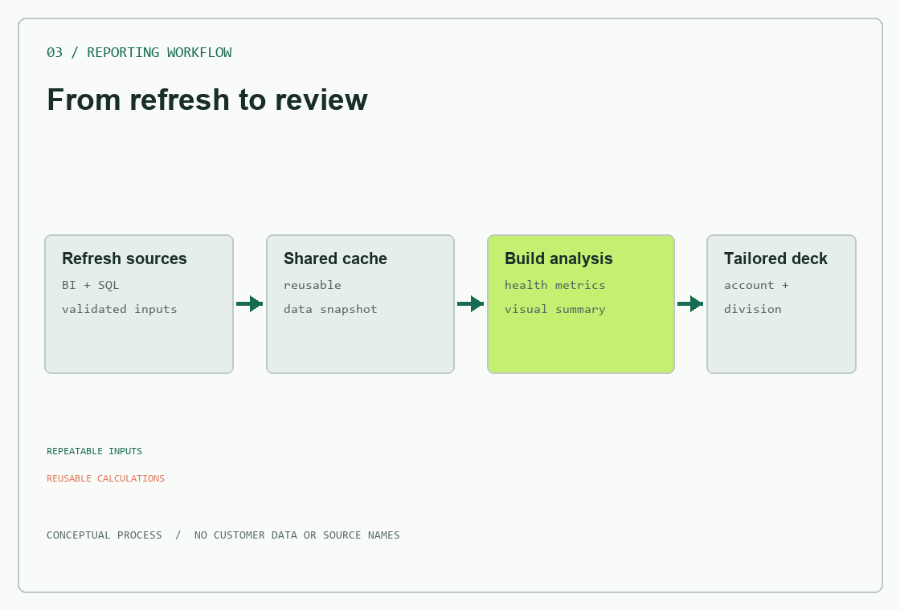
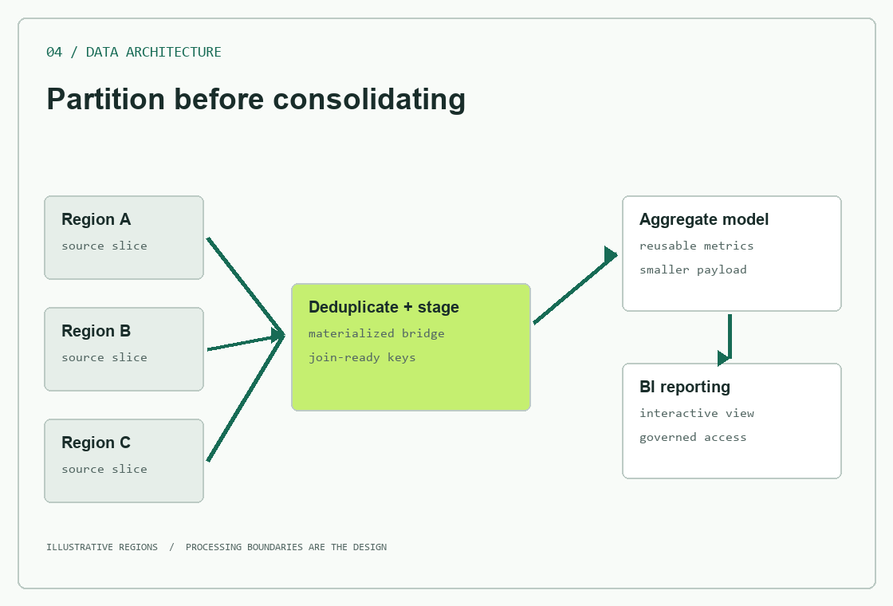

PORTFOLIO CONCEPTAll values are syntheticPORTFOLIO 2026
5+ yearsat John Deere
LATAMdealer operations
Data to actionacross the workflow
Analytics and internal tools experience; transitioning toward backend engineering.
From manual steps to repeatable decisions
Selected work.
Business context stays high-level. Visuals use synthetic examples; no employer code or data is published here.
01 Internal project / public summary
Workflow automation server
Connecting everyday work to the systems behind it.
Mapped repeated inbox, planning and browser tasks into focused tools on a local Node.js MCP server. I shaped the workflows, tested real use cases and iteratively refined the implementation with AI assistance. The server uses typed inputs and reusable Microsoft Graph helpers for filtering and pagination.
My role
Workflow design, requirements and integration testing
Approach
Local stdio server; Graph API and browser automation
Boundary
Internal tool, not a hosted backend service
Node.js
MCP SDK
Microsoft Graph
Zod
Playwright
Conceptual architecture, recreated for this portfolio
02 Analytics engineering
Large-list SQL filtering
Make a useful query scale with the way people work.
For a machine-population analysis, users needed to filter by long lists of part numbers and attributes. The original per-row list parsing timed out on large inputs. I normalized filter values once and matched them through semi-joins; the same long-list scenario then returned results in seconds.
Decision
Split, trim and match filter values as rows
Result
From a 300-second timeout to seconds on the tested query
Output
Parameterized analytics and a self-service dashboard
SQL
Databricks
Power BI
Query design
Generic data flow; example values are synthetic
03 Reporting automation
A repeatable dealer review
From fragmented sources to a meeting-ready action plan.
Turned a recurring parts-business review into a repeatable workflow. I mapped the reporting process, defined reusable visuals and output structure, and validated a pipeline that refreshes shared data, computes inventory-health indicators, and generates a presentation for the selected account and division.
Challenge
Manual reporting across multiple data sources
Design
Shared cache, reusable metrics and presentation templates
Outcome
Single-launch, account-specific review deck
Python
SQL
Databricks
Power BI
PowerShell

Workflow recreated with generic labels and sample data
04 Data architecture
Scaling a global machine-population model
Design around the shape of the data, not the timeout.
A global machine-population analysis outgrew a single interactive query. I tested a regional processing strategy: deduplicate early, materialize a bridge by region, and keep the reporting model focused on reusable aggregates. This made the scale constraint explicit and gave the next implementation phase a validated path.
Constraint
One global interactive query exceeded its execution window
Decision
Partition work by region and materialize intermediate results
Next step
Scheduled processing, then aggregate reporting
Databricks SQL
Delta
Power BI
Data modeling

Conceptual architecture; regions and values are illustrative
The through-line
Operational context. Engineering curiosity.
I am an Industrial Engineer and Data Science master's student with experience across production control, global parts planning, analytics and dealer inventory management at John Deere.
My software experience is strongest in SQL, Python, Node.js integrations and data products. I am moving toward backend engineering by extending that foundation into service design, testing and maintainable APIs.